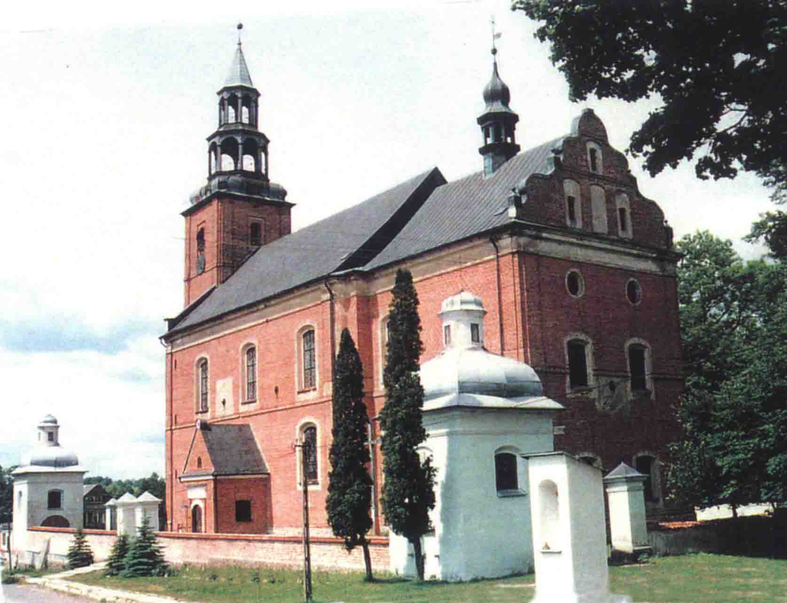

KO¦CIÓ£ POD WEZWANIEM NAJ¦WIÊTSZEGO ZBAWICIELA I ¦WIÊTEGO FLORIANA W G£OTOWIE
Sytuacja

Ko¶ció³ usytuowany jest w centrum wsi, po pn. stronie g³ównej drogi wiejskiej o orientacji (w przybli¿eniu) pn. - pd. S±siaduje od pn. i wsch. z Kalwari± ,
od zach. - z niewielkim placem, od pd. - z drog±. W obej¶ciu ko¶cio³a znajduj± siê cztery murowane, otynkowane kapliczki, wzniesione na planie kwadratu i nakryte baniastymi dachami
z latarniami. Wnêtrza nakryte s± kopu³ami. W ka¿dej z kaplic zachowana jest pierwotna mensa. Pomiêdzy kapliczkami znajduje siê mur zamykaj±cy dziedziniec,
w którym odnajdujemy trzy bramki: na pd. wsch. od ko¶cio³a wej¶cie do Kalwarii, na zach. i pd. - wej¶cia do ko¶cio³a. Na wsch. od ko¶cio³a usytuowana jest murowana kapliczka,
w której widnieje krucyfiks.
Styl, rzut, bry³a
Ko¶ció³ wzniesiono w stylu barokowym, na planie prostok±ta (bry³a zwarta, prosta). Jest budowl± jednonawow± o obszernej czteroprzês³owej nawie i nieznacznie wê¿szym prezbiterium,
którego czê¶æ wschodni± wype³niaj± pomieszczenia w dwóch kondygnacjach: w przyziemiu zakrystia, na piêtrze skarbczyk. Na zewn±trz ¶ciany s± nietynkowane i przez to sprawiaj±
do¶æ surowe wra¿enie, pomimo ¿e naro¿a prezbiterium oraz wie¿ê opinaj± pilastry, a wschodni± czê¶æ wieñczy falisty szczyt. W sylwetce dominuje wie¿a czterokondygnacyjna,
nakryta he³mem, który pomimo ¿e powsta³ w 1854 roku posiada barokowy, baniasty kszta³t i podwójn±, przezroczyst± latarniê, a zakoñczony jest chor±giewk± z dat± 1724.
Równie¿ wie¿yczka posiada formê barokow±, a jej chor±giewka nosi datê 1723. Na ¶cianach korpusu od wschodu i po³udnia zachowa³y siê a¿ trzy zegary s³oneczne.
Korpus g³ówny i prezbiterium nakryte s± odrêbnymi dachami dwuspadowymi.
Bardzo efektywnie przedstawia siê wnêtrze o typowym w architekturze baroku rozwi±zaniu ¶cienno - filarowym, w którym do ¶rodka budowli wci±gniête filary przy¶cienne,
konieczne dla ud¼wigniêcia sklepieñ, tworz±ce równocze¶nie wzd³u¿ bocznych ¶cian rz±d g³êbokich wnêk, a zarazem jakby p³ytkich kaplic mieszcz±cych boczne o³tarze i okna.
W po³owie wysoko¶ci owych wnêk przebiega empora z obej¶ciem ca³ego wnêtrza. Wnêtrze nakrywa sklepienie kolebkowe z lunetami na gurtach.
Wewnêtrzne ¶ciany ¶wi±tyni s± marmuryzowane - pokryte stiukow± ok³adzin±.
Materia³ i technika
Ko¶ció³ jest murowany z ceg³y na zaprawie wapiennej, na niskiej kamienno - ceglanej podmurówce. Od strony elewacji pn. znajduj± siê kamienne przypory.
Obramienia okien i drzwi oraz fryzy s± tynkowane . Dach kryty jest blach± miedzian±. W nawie i prezbiterium znajduj± siê sklepienia kolebkowe z lunetami na gurtach, polichromowane,
a w pozosta³ych pomieszczeniach - sklepienia krzy¿owe. Wewn±trz wiêkszo¶æ ¶cian wykonana jest ze sztucznego marmuru, natomiast ¶ciany w kruchcie,
zakrystii i przestrzeni pod chórem s± tynkowane. Ko¶ció³ wy³o¿ony jest posadzk± kamienn±, w kruchcie i zakrystii wykonano j± z dwubarwnych p³ytek.
Na chórze znajduj± siê neobarokowe organy. Empora organowa jest drewniana, wsparta na dwóch masywnych, ceglanych filarach;
schody na chór s± drewniane, policzkowe, zabiegowe. Wszystkie otwory okienne i drzwiowe s± zwieñczone ³ukiem odcinkowym, a okna o drobnych podzia³ach szczelinami o³owianymi.
W wiêkszo¶ci okien znajduj± siê witra¿e. Drzwi zewnêtrzne s± dwuskrzyd³owe, p³ycinowe z przeszklonymi nad¶wietlami.
Elewacja
Frontowa (zach.) ¶ciana budynku jest symetryczna wzglêdem osi g³ównej, poprzedzona masywn±, czterokondygnacyjn± wie¿±, w przyziemiu której znajduje siê g³ówne wej¶cie do ko¶cio³a.
Nad nim umieszczony jest zegar s³oneczny i niewielkie okienko. Podzia³y na kondygnacje podkre¶laj± gzymsy dzia³owe. Naro¿a wie¿y opinaj± proste pilastry.
Elewacja wschodnia jest równie¿ symetryczna, dwuosiowa, opiêta analogicznymi pilastrami. Du¿e otwory okienne umieszczone s± w dwóch kondygnacjach, na poddaszu -okulusy.
Ca³o¶æ wieñczy falisty szczyt, w którym znajduj± siê cztery tynkowane blendy, usytuowane w dwóch rzêdach. Elewacje boczne (pn. i pd.) zosta³y opracowane analogicznie:
korpus g³ówny trój - , prezbiterium - dwuosiowe . Otwory okienne rozmieszczone s± rytmicznie w dwóch kondygnacjach. Od strony po³udniowej, na osi korpusu g³ównego znajduje siê
niewielka kruchta, zwieñczona trójk±tnym szczytem; elewacja pó³nocna jest oszkarpowana. Ca³y ko¶ció³ obiegaj± dooko³a profilowane gzymsy: dzia³owy i wieñcz±cy.
Naro¿a podkre¶lone s±, pilastrami. Na ka¿dej z elewacji znajduje siê zegar s³oneczny, a na kalenicy prezbiterium - wie¿yczka na sygnaturê, zwieñczona chor±giewk±.
Witra¿e
Okna ko¶cio³a to secesyjne figuralne witra¿e , które w 1877 roku wykona³ Christoph Rings z Koeln.
Przedstawiaj± one nastêpuj±ce sceny biblijne: Narodzenie Jezusa, Jan Chrzciciel, Eliasz i Anio³, Józef Namiestnikiem Egiptu,
Ofiara Abrahama, Moj¿esz. Witra¿e te nale¿± do najpiêkniejszych na Warmii. Wykonane s± ze szk³a barwionego, ¿elaza i o³owiu o wymiarach 320 x 160 cm w formie wysokiego prostok±ta,
gór± zamkniêtego ³ukiem odcinkowym. Na tle architektonicznym (w ka¿dym z okien portal o zró¿nicowanych formach i detalu architektonicznym) znajduje siê przedstawienie figuralne.
U do³u umieszczono tablicê z ornamentem zwijanym po bokach, na niej za¶ cytaty z biblii. Jeden z witra¿y wype³niony jest motywami ornamentalnymi.
W ko¶ciele znajduj± siê równie¿ cztery witra¿e przedstawiaj±ce ewangelistów : ¦w. Marka, ¦w. £ukasza, ¦w. Mateusza i ¦w. Jana.
Wykonane s± ze szk³a barwionego, ¿elaza i o³owiu o wymiarach 110 x 95 cm w formie niskiego prostok±ta, gór± zamkniêtego ³ukiem odcinkowym, podzielonego ¿elaznymi sztabami na kwatery.
Wzd³u¿ krawêdzi znajduje siê szeroka bordiura, a w polu postacie ewangelistów, ukazane w obramieniu z³o¿onym z trój li¶cia i trójk±ta równobocznego.
Obok ewangelistów znajduj± siê zwierzêta s± to symboliczne przedstawienia tych czterech ewangelistów.